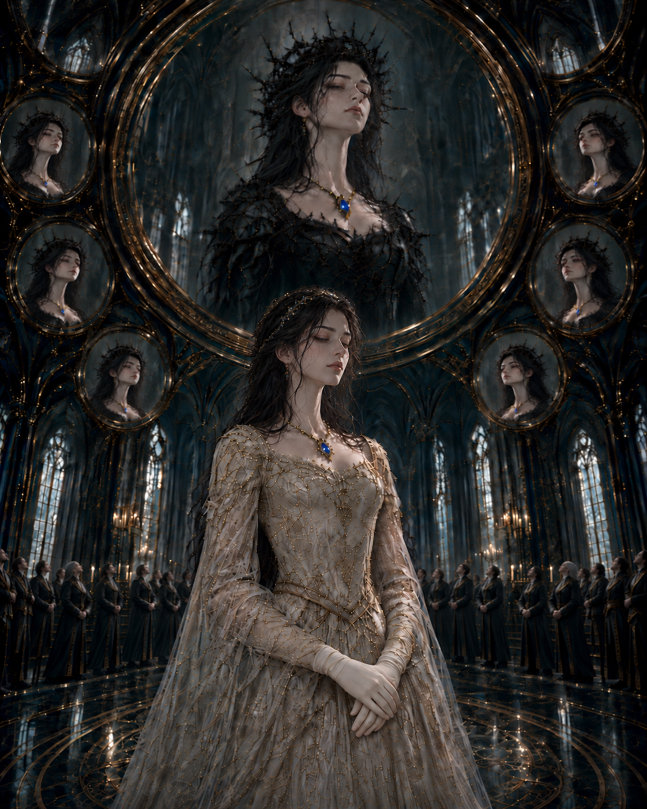

왕관을 쓰기 위해 그녀가 해야 할 일은 단 하나였다.
무릎을 꿇는 것.
왕관은 제 주인을 맞을 듯 숨을 죽이고 있었고, 대전 안의 모두가 그녀의 무릎을 기다리고 있었다.
높은 창 틈으로 스며든 서늘한 가을 끝의 바람이, 대전 안에 남아있던 마지막 온기마저 훑어갔다.
그녀의 정혼자 커런 노윅은 그녀가 제 것임을 증명하듯, 아이리스의 등 뒤로 드리운 그림자를 밟고 서 있었다.
그의 얼굴에는 빈틈 하나 허락하지 않는 예의가 침묵했다.
그의 사랑은 박제된 나비가 핀에 꽂힌 채 유리 상자 안에서 누리는 영원과 같았다. 날개 하나 다치지 않게 보호하는 일을 사랑이라고 믿는 사람이었다.
아버지는 그림자를 드리운 높은 등받이의 왕좌에 앉아, 이미 대관식이 끝난 것처럼 확신에 찬 눈매로 몸을 조금 앞으로 기울이고 있었다.
오늘만큼은 어머니의 손에 아무 서류도 없었다. 텅 빈 손끝은 딸의 옷깃이라도 바로잡으려는 듯 움찔했다.
대신들의 줄은 대전 끝까지 이어져 있었고, 뒤쪽에 선 사람들은 아이리스의 얼굴이 아니라 천장의 거울을 올려다보고 있었다.
거울이 먼저 알려줄 것이었다.
왕관을 받기 위해 무릎을 꿇을 공주의 얼굴이 얼마나 아름답게 빛나는지를.
아이리스는 무릎을 꿇지 않았다.
“저는.”
그 한마디에 일제히 쏟아지던 수십 개의 시선이 숨결 속에 얼어붙었다.
“이 이름으로 더는 살지 않겠습니다.”
숨소리조차 삼켜진 정적 위로, 커런의 침묵이 아주 조금 무너졌다.
지직.
불길한 파열음을 품은 가드다란 균열 하나가 왕관의 표면을 가로질렀다.
동시에 천장의 거울들이 일제히 숨을 죽이듯 어두워졌다.
거울이 다시 밝아졌을 때, 그 안의 비친 아이리스의 얼굴은 지나치게 완벽해 보였다.
그 얼굴에는 공주로서 익혀온 다정함도, 사람만이 가진 따스한 온기도 없었다. 눈동자는 아무런 감정도 없이 대전 안의 사람들을 차갑게 내려다보고 있었다.
완벽한 얼굴 위로 왕관이 놓였어야 할 자리에는 가느다란 검은 그림자들이 서로를 휘감으며 하나의 가시관을 이루었다.

거울 속 아이리스의 모습은 우아했고, 잔혹했다.
가시관은 처음부터 제자리였다는 듯 그녀의 머리 위에 내려앉아 있었다.
그 또한 아이리스가 선택한 적 없는 왕관이었다.
왕국이 그녀에게 새로 씌운 이름의, 또 다른 얼굴이었다.
대전 뒤편 어딘가에서 낮고 무거운 숨소리가 들렸다.
이마에서 광대까지 덮은 은빛 가면으로 덮여, 표정마저 지워진 여자가 서 있었다. 인영원 대사제 칼리스타 렌이었다.
가면 아래로 드러난 입술이 낮게 열렸다. 혀끝에 오래 길들여진 이름인 듯 망설임 없는 목소리였다.
“마녀.”
대전 오른편에 앉아 있던 기록관리부 수장의 펜촉이 움직였다. 종이에 사각거리는 소리만이 그 목소리를 뒤 따랐다.
펜은 한 번도 고개를 들지 않았다. 반듯이 빗어 넘긴 백발 아래, 깊은 주름에 둘러싸인 두 눈은 흰 종이 위의 글자만을 쫓고 있었다.
스물아홉 해 동안 왕국이 지켜온 이름 하나가 다른 무언가로 다시 쓰였다.
그녀가 왜 그런 말을 했는지는 기록되지 않을 것이었다.
반역. 계승 거부. 왕실 모독.
아직 판정 내려지지 않았기에 어느 단어도 확정된 것은 아니었지만, 그의 손은 이미 그중 하나를 향해 움직이고 있었다.
어머니 세라핀은 딸을 붙잡으려는 듯 손을 뻗었다. 손끝이 허공에서 잠시 머뭇거렸지만, 자신이 왕비라는 사실을 기억한 듯 손을 내렸다.
“아이리스.”
어머니가 그녀의 이름을 불렀다.
딸을 부르려 했는지, 공주의 마지막 흠결을 바로잡으려 했는지 세라핀 자신도 알지 못했다.
에드먼드 왕이 왕좌의 팔걸이를 짚고 거칠게 몸을 일으켰다.
“네가 무슨 말을 하고 있는지 알고 있는 것이냐.”
아이리스는 아버지를 바라보았다.
아버지는 미간을 찌푸리고 있었다. 그 아래 두 눈 깊은 곳에 숨기지 못한 두려움이 어렸다.
“알고 있습니다.”
“그 이름이 무엇을 지키는지도 알고 있느냐.”
아이리스의 시선이 왕관에 머물렀다.
빛을 잃어 차갑게 식은 은 받침대 위 왕관에는 가장 높은 끝에서 시작된 가느다란 균열이 더 길게 안쪽으로 파고들었다.
마치 제 안의 것을 더는 가두지 못한다는 듯, 은빛 표면이 날카로운 비명을 지르며 갈라지고 있었다.
‘아이리스 애시워스.ʼ
그녀가 제 이름을 부르기도 전에 왕국에는 이미 그녀의 자리가 있었다.
완벽한 공주. 왕국의 계승자.
그 이름 덕분에 그녀는 굶지 않았고, 추위에 떨지 않았다. 다만 그 이름 안에서 그녀가 무엇을 원하는지는 누구도 묻지 않았다.
아버지는 아이리스의 침묵을 망설임으로 받아들이고 말을 이었다.
“네가 지금 거부하는 것은 왕관 하나가 아니다. 네 왕국과 백성, 두 가문의 결속, 그 이름이 지켜온 모든 것을 거부하는 일이다.”
아이리스는 그 이름이 자신을 지켜 온 것인지, 자신이 그 이름을 지켜 온 것인지 알 수 없었다.
커런이 입을 열었다.
“폐하.”
그의 시선은 왕을 향했지만, 말은 아이리스에게 닿았다.
“오늘의 중압감에 잠시 판단이 흐려지신 겁니다.”
커런은 아이리스 곁으로 한 걸음 다가왔다. 아이리스가 무슨 말을 하든 그녀의 마음은 자신이 더 잘 안다는 듯, 그의 목소리에는 작은 동요도 없었다.
그 또한 아이리스가 원하는 것을 물은 적이 없었다.
조금의 의심도 없이 말을 이어가려 했다.
“잠시 멈추고 다시…”
“제 판단은 달라지지 않습니다.”
아이리스가 커런의 말을끊었다.
커런의 얼굴에는 상처와 모욕이 거의 같은 표정으로 떠올랐다.
그가 사랑으로 만든 영원의 유리 상자 안에서, 그녀의 날개는 가장 아름답게 펼쳐진 순간에 붙들려 있었다. 날개는 조금도 닳지 않았지만, 그녀는 어디론가 날아갈 수 없었다.
아이리스의 거부는 그 유리 상자를 깨고 날아가는 일이었다.
천장의 거울 속 가시관을 쓴 그녀의 얼굴이 일렁였다.
“거울을 멈춰라.”
어머니의 명령에도 아무도 움직이지 않았다.
거울은 누군가 켜고 끄는 물건이 아니었다. 사람들의 판단을 받아 비출 뿐이었다.
왕국은 빈칸을 견디지 못했다.
“마녀.”
그 단어가 다시 들렸다. 기록관리부 수장의 손이 다시 그 소리를 따라 펜촉을 움직였다.
“기록을 보존하겠습니다. 거울에 비친 지금 보이는 모습 그대로입니다.”
그가 말했다.
‘지금 보이는 모습 그대로.ʼ
얼굴은 분명 자신의 것이었다. 거울이 그 얼굴에 덧씌운 가시관과 사람들이 붙인 ‘마녀ʼ라는 이름까지 자신의 것은 아니었다.
왕이 말했다.
“그 인영은 기록하지 마라.”
기록관리부 수장 펜의 눈동자가 처음으로 종이에서 왕을 향했다.
“폐하, 거울의 인영을 기록에서 뺄 수는 없습니다. 아직 판정이 내려지진 않았으니 판정란은 비워 두겠습니다.”
왕의 명령을 거역하는 자의 태도는 아니었다. 이미 정해진 절차를 아뢰었을 뿐이었다.
펜의 눈동자가 다시 종이로 향하자 펜촉이 사각거리며 다시 움직였다.
아이리스는 아버지의 얼굴에서 두 가지 두려움이 뒤섞이는 것을 보았다. 딸에게 닥칠 일을 두려워하는 마음. 딸로 인해 자신의 이름까지 흔들릴까 두려워하는 마음.
어느 쪽이 더 큰지는 알 수 없었다.
“마지막으로 묻겠다.”
에드먼드 왕의 목소리였다.
“무릎을 꿇겠느냐.”
아버지는 왕의 목소리로 아이리스를 기다리고 있었다.
사랑과 역할은 서로를 밀어내지 않고 언제나 같은 얼굴로 왔다.
쩌적.
벌어진 은빛 표면의 틈새로, 억눌려 있던 크고 날 선 파열음이 한꺼번에 쏟아져 대전을 갈랐다.
아이리스는 여전히 제 몸을 가르고 있는 왕관 앞에 서 있었다.
무릎을 굽히기만 하면 모든 것을 되돌릴 수 있었다.
커런은 다시 안전한 유리 상자를 만들 것이고, 어머니는 마지막 흠결을 다듬어 조각을 완성하고, 아버지는 왕국의 품위를 지켜 낼 것이다.
거울 속 잔혹한 가시관은 사라지며, 아름다운 왕관이 그녀의 머리를 장식할 것이었다.
아이리스는 그것이 얼마나 쉬운 일인지 알고 있었다.
그녀는 평생 자신이 원하는 것을 묻지 않은 채, 정해진 일을 완벽하게 해왔다.
문장 하나가 떠올랐다.
‘하나의 정직한 말. 하나의 선택. 한 번의 거절. 한 번의 허락.ʼ
“아니요.”
쩌어억.
은 받침대 위 왕관이 두 동강 나 아이리스 드레스 자락 앞으로 굴러떨어졌다.
동시에 그녀의 은회색 예복 위로 시커먼 먹색이 번져 올랐다.
누군가는 뒷걸음치듯 물러섰고, 누군가는 더 잘 보기 위해 천장의 거울을 올려다보던 고개를 내렸다. 마녀의 탄생을 두려워하면서도 그 순간을 놓치고 싶어 하지 않는 얼굴들이었다.
오늘 아침까지 그들은 그녀를 완벽한 공주라고 불렀다.
내일부터는 오래전부터 그녀의 불안정함을 자신들이 알아보았다고 말할 것이다.
침착함은 냉혹함으로, 영리함은 기만으로, 침묵의 순간마저 마녀의 숨결을 감춘 증거로.
그래야만 자신들이 옳다고 믿을 수 있었다.
그들이 우러러보던 가장 눈부신 빛은, 이제 마주하기조차 두려운 캄캄한 어둠이 되었다.
기록관리부 수장의 펜촉이 빛을 잃은 이름 위로 검은 획을 그으며 사각거렸다.
가장 완벽했던 후계자의 모든 권리와 보호가 영원히 지워지는 소리였다.